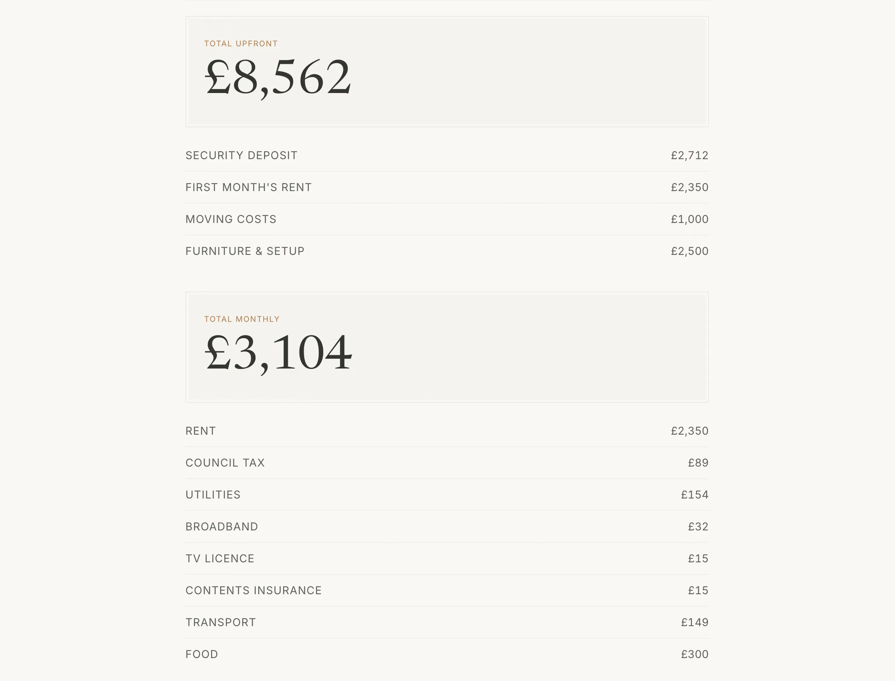

Threshold
A clearer view of what moving could cost.
57user stories
13 slicesbuilt in a day
182tests
3 citiesLondon, Basel, Zurich
The rent is the easy part.
My friends had no clear idea what renting would cost by area, and one of them was about to move to Switzerland. Most rent calculators stop at the monthly figure. Before you get the keys you might need five weeks’ deposit in London, or three months’ in Switzerland, plus the first month’s rent, moving costs and furniture. Can I afford to move, and if not, how long until I can?
The problem, on paper.
“People in their 20s and 30s make the decision to move out … without a clear, honest view of what it will actually cost.” From the PRD · Threshold’s PRD, 16 April 2026
Two totals and a straight answer.
- Upfront and monthly stay separate. You can often afford the monthly costs long before you’ve saved the upfront ones.
- The answer is one of three. Move now; not yet, and how many months of saving; or your income doesn’t cover the monthly costs.
- Each city keeps its own rules. Different deposits, local charges and transport passes, and every default can be changed.
- Suggestions show what would help. A cheaper district, a smaller place, or a flatmate, and how much each would save.

The link is the save file.
Everything you choose lives in the URL: no account, no backend. The calculations are plain functions with no state of their own. The maps use real boundaries: 33 London boroughs, Zurich’s 12 Kreise and Basel in seven areas.
Used for real.
I used it during my own flat hunt, and friends have used it too.
What’s next
- Keep the data fresh. Move the April 2026 snapshot to a scheduled refresh where the sources allow it.
- Show the sources in the app. Link every default to its source.
- Finer areas in Basel. Use its 19 Wohnviertel rather than seven areas.